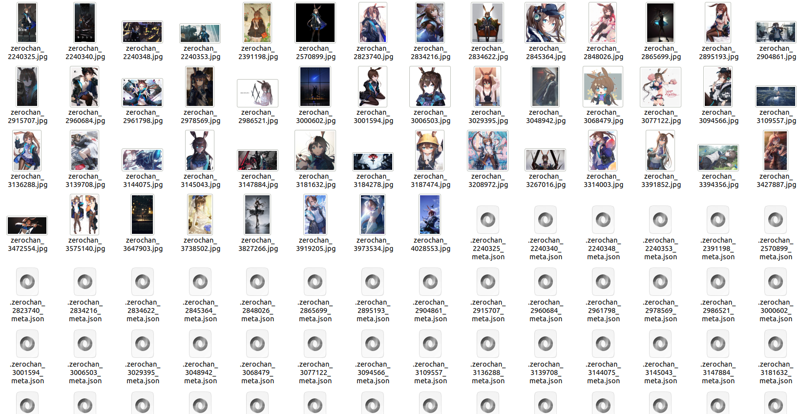
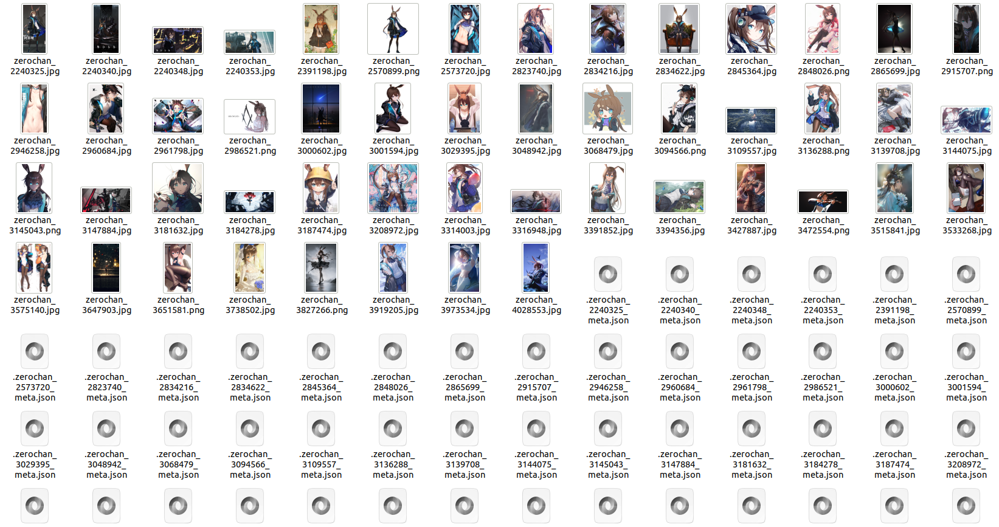
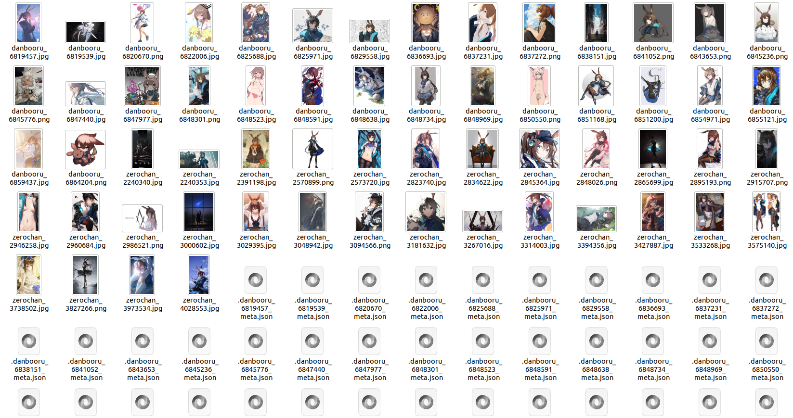
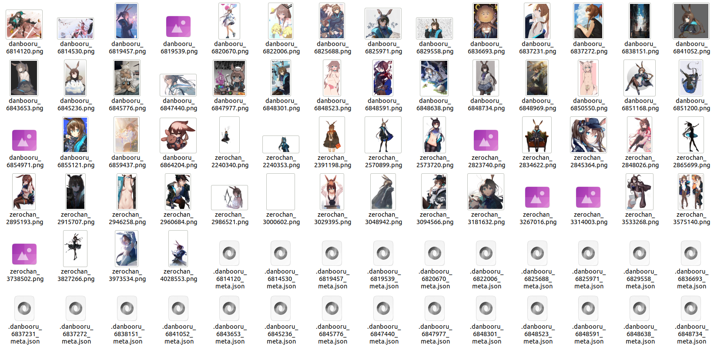
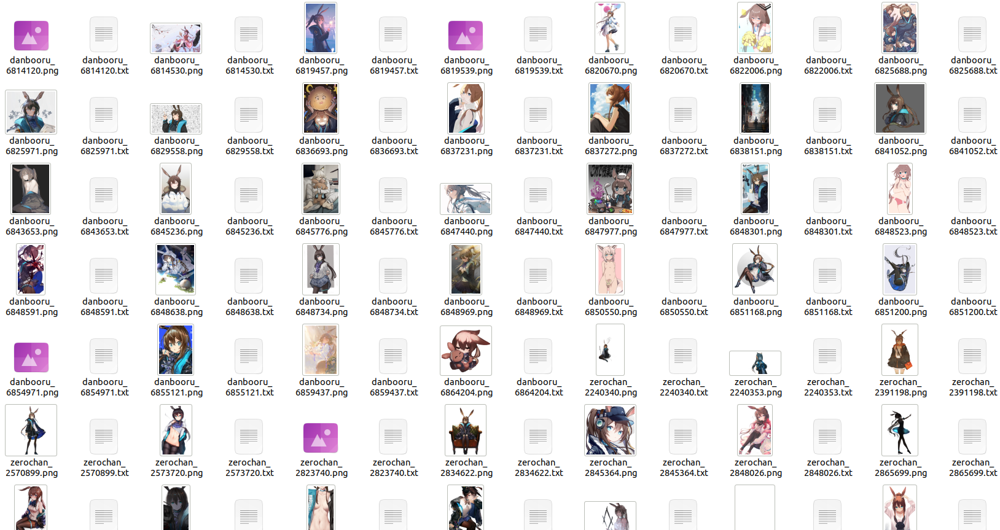

我想从网站上爬取一些数据
如何从网站爬取数据？
实际上，waifuc能爬取的网站远远不止Danbooru一个
不过在正式开始之前，Narugo要介绍他的另一位老婆，可爱的小兔娘阿米娅amiya，同样来自明日方舟Arknights
以下为Narugo发癫内容：你问我为什么有这么多老婆？众所周知，二次元爱好者的老婆有无限多个，她们都是我的天使😍

Zerochan
Zerochan是一个包含图像平均质量较高的网站，我们可以使用极为简单的方式进行爬取
当我们不需要大批量的获取图像，而只需要50张图像时，可以使用以下代码实现：
1from waifuc.export import SaveExporter 2from waifuc.source import ZerochanSource 3 4if __name__ == '__main__': 5 s = ZerochanSource('Amiya') 6 # '[:50]'限制爬取数量为50张， 7 # 如果需要全部爬取只需删去即可 8 s[:50].export( 9 SaveExporter('/data/amiya_zerochan') 10 )
请注意，此处使用SaveExporter导出，而非之前的TextureInversionExporter导出，关于它的作用将在本篇后续部分进行介绍
上述爬取到的图像数据将被导出到指定的./data/amiya_zerochan本地路径下，结果如下：

然而，我们会发现一个问题：
Zerochan上有较多的member-only的图像，我们需要登录后才能获取它们
为此我们可以使用自己的用户名username和密码password进行鉴权，以获得更多、更优质的图像，代码如下：
1from waifuc.export import SaveExporter 2from waifuc.source import ZerochanSource 3 4if __name__ == '__main__': 5 s = ZerochanSource( 6 'Amiya', 7 username='your_username', 8 password='your_password', 9 ) 10 s[:50].export( 11 SaveExporter('/data/amiya_zerochan') 12 )
再次运行，果然我们成功获取到了不少的member-only图像：

不过我们又发现，这些图像很多分辨率并不高，边长超过1000像素的不多
这是因为Zerochan会默认选用large尺寸的图像，以提高下载速度
如果需要更大尺寸的图像，可以将尺寸选择select设置为full，就像这样：
1from waifuc.export import SaveExporter 2from waifuc.source import ZerochanSource 3 4if __name__ == '__main__': 5 s = ZerochanSource( 6 'Amiya', 7 username='your_username', 8 password='your_password', 9 select='full', 10 ) 11 s[:50].export( 12 SaveExporter('/data/amiya_zerochan') 13 )
再再次运行后，得到的将全都是全尺寸的图像
然而，依然还存在一个问题：高质量图片中很多都是官方画作，而阿米娅作为游戏的女主角，更是常作为C位出现在多人图中
我们实际上只需要仅包含她自己的图像，这当然是没问题，只需要将严格搜索模式strict设置为True即可：
1from waifuc.export import SaveExporter 2from waifuc.source import ZerochanSource 3 4if __name__ == '__main__': 5 s = ZerochanSource( 6 'Amiya', 7 username='your_username', 8 password='your_password', 9 select='full', 10 strict=True, 11 ) 12 s[:50].export( 13 SaveExporter('/data/amiya_zerochan') 14 )
再再再次运行，我们最终得到了来自Zerochan的高质量、全尺寸且均为阿米娅单人的图像，如下所示：

Danbooru
理所当然，Danbooru也是可以轻松被waifuc爬取的，使用十分简单：
1from waifuc.export import SaveExporter 2from waifuc.source import DanbooruSource 3 4if __name__ == '__main__': 5 s = DanbooruSource(['amiya_(arknights)']) 6 s[:50].export( 7 SaveExporter('/data/amiya_danbooru') 8 )
以及，在Danbooru及其类似网站可通过添加solo关键词来直接筛选单人图像，以节省操作步骤，就像这样：
1from waifuc.export import SaveExporter 2from waifuc.source import DanbooruSource 3 4if __name__ == '__main__': 5 s = DanbooruSource(['amiya_(arknights)', 'solo']) 6 s[:50].export( 7 SaveExporter('/data/amiya_solo_danbooru') 8 )
Pixiv
waifuc支持对Pixiv的多种爬取方式：关键词检索、用户检索以及各种排行榜爬取
我们可以使用PixivSearchSource数据源来进行关键词检索方式的图像数据爬取，如下所示：
1from waifuc.export import SaveExporter 2from waifuc.source import PixivSearchSource 3 4if __name__ == '__main__': 5 s = PixivSearchSource( 6 # '明日方舟 阿米娅' 7 'アークナイツ アーミヤ', 8 refresh_token='your_pixiv_refresh_token', 9 ) 10 s[:50].export( 11 SaveExporter('/data/amiya_pixiv') 12 )
我们也可以使用PixivUserSource数据源来进行检索方式的图像数据爬取，如下所示：
1from waifuc.export import SaveExporter 2from waifuc.source import PixivUserSource 3 4if __name__ == '__main__': 5 s = PixivUserSource( 6 2864095, # 爬取用户2864095 7 refresh_token='your_pixiv_refresh_token', 8 ) 9 s[:50].export( 10 SaveExporter('/data/pixiv_user_misaka_12003') 11 )
我们还可以使用PixivRankingSource数据源来进行可选择的排行榜的图像数据爬取，如下所示：
1from waifuc.export import SaveExporter 2from waifuc.source import PixivRankingSource 3 4if __name__ == '__main__': 5 s = PixivRankingSource( 6 mode='day', # 选择全年龄日榜 7 refresh_token='your_pixiv_refresh_token', 8 ) 9 s[:50].export( 10 SaveExporter('/data/pixiv_daily_best') 11 )
Anime-Pictures
Anime-Pictures的图像数量不多，但是质量普遍很高
因此waifuc也同样支持对它的爬取，如下所示：
1from waifuc.export import SaveExporter 2from waifuc.source import AnimePicturesSource 3 4if __name__ == '__main__': 5 s = AnimePicturesSource(['amiya (arknights)']) 6 s[:50].export( 7 SaveExporter('/data/amiya_animepictures') 8 )
Sankaku
Sankaku的图像数量庞大且种类很多
waifuc同样支持了它，如下所示：
1from waifuc.export import SaveExporter 2from waifuc.source import SankakuSource 3 4if __name__ == '__main__': 5 s = SankakuSource( 6 ['amiya_(arknights)'], 7 username='your_username', 8 password='your_password', 9 ) 10 s[:50].export( 11 SaveExporter('/data/amiya_sankaku') 12 )
Gelbooru
Gelbooru与Danbooru的内容很相似，但在一些特定内容上有更多图像
waifuc同样它支持的爬取，如下所示：
1from waifuc.export import SaveExporter 2from waifuc.source import GelbooruSource 3 4if __name__ == '__main__': 5 s = GelbooruSource(['amiya_(arknights)']) 6 s[:50].export( 7 SaveExporter('/data/amiya_gelbooru') 8 )
Duitang
Duitang是一个来自中国的网站，因其建站时间较长，也包含不少优质的图像
应中国用户的请求，Narugo为waifuc添加了针对堆糖(duitang)的支持，如下所示：
1from waifuc.export import SaveExporter 2from waifuc.source import DuitangSource 3 4if __name__ == '__main__': 5 s = DuitangSource('阿米娅') 6 s[:50].export( 7 SaveExporter('/data/amiya_duitang') 8 )
其余受支持的图像站
除了上述的这些外，waifuc还支持了大量其他的图像站。所有受支持图像站如下所示：
(关于上述Source的更多信息和使用细节，详见waifuc源代码)
我想从多个网站上爬取数据
在一些情况中，我们希望从多个网站获取图像数据
比如下面的情况中，我们需要从Danbooru上获取30张图像，再从zerochan上获取30张图像
为满足此类需求，waifuc提供了Source间的串并联操作，可以通过串联+和并联|将多个数据源进行集成
例如在上面的需求中，我们可以将Danbooru数据源和Zerochan数据源进行串联，形成新的数据源，如下所示：
1from waifuc.export import SaveExporter 2from waifuc.source import DanbooruSource, ZerochanSource 3 4if __name__ == '__main__': 5 # 先从Danbooru爬取30张 6 s_db = DanbooruSource( 7 ['amiya_(arknights)', 'solo'], 8 min_size=10000, 9 )[:30] 10 11 # 再从Zerochan爬取30张 12 s_zerochan = ZerochanSource( 13 'Amiya', 14 username='your_username', 15 password='your_password', 16 select='full', 17 strict=True, 18 )[:30] 19 20 # 合并爬取到的两个数据流 21 s = s_db + s_zerochan 22 s.export( 23 SaveExporter('/data/amiya_2datasources') 24 )
上述代码将先从Danbooru爬取30张图像，再从Zerochan爬取30张图像
这样，我们可以得到如下的数据集：

除此之外，在部分情况下，我们可能并不会提前设计好从各个数据源爬取多少图像，而是希望能尽量多地从不同数据源爬取，并最终得到一个需要的总数量。在这种情况下，我们可以使用并联操作，如下所示：
1from waifuc.export import SaveExporter 2from waifuc.source import DanbooruSource, ZerochanSource 3 4if __name__ == '__main__': 5 # 初始化Danbooru数据源 6 s_db = DanbooruSource( 7 ['amiya_(arknights)', 'solo'], 8 min_size=10000, 9 ) 10 11 # 初始化Zerochan数据源 12 s_zerochan = ZerochanSource( 13 'Amiya', 14 username='your_username', 15 password='your_password', 16 select='full', 17 strict=True, 18 ) 19 20 # 从两个数据源随机爬取60张 21 s = (s_db | s_zerochan)[:60] 22 s.export( 23 SaveExporter('/data/amiya_zerochan') 24 )
在这一次爬取中，将从两个站中随机选择进行爬取，直至爬取到60张图像为止
因此实际上最终获得的数据集并不确定，以下数据集仅供参考：

所有的Source间也可以进行复杂的嵌套运算，以构建一个复杂的数据源：
1from waifuc.export import SaveExporter 2from waifuc.source import DanbooruSource, ZerochanSource, PixivSearchSource 3 4if __name__ == '__main__': 5 # 初始化Danbooru数据源 6 s_db = DanbooruSource( 7 ['amiya_(arknights)', 'solo'], 8 min_size=10000, 9 ) 10 11 # 初始化Zerochan数据源 12 s_zerochan = ZerochanSource( 13 'Amiya', 14 username='your_username', 15 password='your_password', 16 select='full', 17 strict=True, 18 ) 19 20 # 初始化Pixiv数据源 21 s_pixiv = PixivSearchSource( 22 'アークナイツ (amiya OR アーミヤ OR 阿米娅)', 23 refresh_token='your_pixiv_refresh_token', 24 ) 25 26 # 从构造的数据源爬取共计100张 27 s = s_zerochan[:50] + (s_db | s_pixiv)[:50] 28 s.export( 29 SaveExporter('/data/amiya_zerochan') 30 )
此处就构建了一个复杂的数据源
s = s_zerochan[:50] + (s_db | s_pixiv)[:50]，具体功能为：
先从Zerochan上爬取50张图像
再从Danbooru和Pixiv上随机爬取，共计50张图像
因此这个数据源最终将爬取以Zerochan为主的100张图像
Source的串并联操作还可以在attach方法之后进行，即进行预处理后，再进行串并联
例如：
1from waifuc.action import BackgroundRemovalAction, FileExtAction 2from waifuc.export import SaveExporter 3from waifuc.source import DanbooruSource, ZerochanSource 4 5if __name__ == '__main__': 6 # 初始化Danbooru数据源 7 s_db = DanbooruSource( 8 ['amiya_(arknights)', 'solo'], 9 min_size=10000, 10 ) 11 12 # 初始化Zerochan数据源 13 s_zerochan = ZerochanSource( 14 'Amiya', 15 username='your_username', 16 password='your_password', 17 select='full', 18 strict=True, 19 ) 20 # 对爬取自Zerochan的图像进行去背景处理 21 s_zerochan = s_zerochan.attach( 22 BackgroundRemovalAction() 23 ) 24 25 # 从Danbooru数据源与处理后的Zerochan数据源中随机爬取60张 26 s = (s_zerochan | s_db)[:60] 27 s.attach( 28 FileExtAction('.png'), # 以'.png'扩展名保存图像文件 29 ).export( 30 SaveExporter('/data/amiya_zerochan') 31 )
上述代码的效果是：
从Zerochan和Danbooru两个网站上爬取图像
Zerochan的图像需要进行去背景处理，而Danbooru上的不需要
两个数据源总计爬取60张图像
得到的结果如下所示，可以看到，zerochan的图像都进行了去背景处理：
通过以上演示可以了解，串并联是Source的一项重要特性，合理利用将让配置多样化且极富灵活性
为什么会有这么多json文件？
如果你坚持读到了这里，你应该会注意到示例图中的一个问题
上述所有使用SaveExporter进行保存的数据集，每个图像文件都有与其同名的json文件
你一定会感到好奇，这些json文件是做什么用的？我该如何关闭它们的生成？
该部分将对此一一作出解答
首先，我们打开一个其中的json文件.danbooru_6814120_meta.json，并查看里面的内容：
内容比较长，简单来说，这是一个存储图像文件元数据meta-information文件
它包含了以下的信息：
来自danbooru网站的图像信息，即图像的tag、尺寸、ID、上传时间等
图像的url信息，即图像是从哪里被下载的
图像的命名信息，即图像将被保存为什么文件名
图像的tag信息，即当生成训练用的数据集时，其tag将包含哪些
这些信息在一些处理环节中，将发挥其应有的作用
例如tag信息，生成该信息需要从网站进行爬取，或者使用tagger进行打标，而该信息将在产生LoRA训练数据集时进行写入
因此在waifuc中，默认对json文件进行保存，并且可以使用SaveExporter进行保存
为了充分利用这些元数据，我们可以使用LocalSource将包含json文件的本地数据集通过SaveExporter再次加载：
1from waifuc.export import TextualInversionExporter 2from waifuc.source import LocalSource 3 4if __name__ == '__main__': 5 # 从本地加载数据源 6 s = LocalSource('/data/amiya_zerochan') 7 s.export( 8 TextualInversionExporter('/data/amiya_zerochan_save') 9 )
以上代码可以将包含元数据的本地数据集再次载入，并按照LoRA训练数据集的格式进行再次保存，即只保留存储标注信息的txt文件
处理后的数据集如下所示：

Note
LocalSource对所有本地的数据集都可进行加载，并不一定需要元数据若没有json文件，得到的图像数据将不包含初始元数据，这意味着tag等信息必须重新生成
LocalSource作为一种Source，也可以进行串并联操作，因此你可以同时使用来自网络和本地的图像构建数据集
当你确定只需要图像，不需要任何元数据时，设置参数no_meta为True来实现这一点：
1from waifuc.export import SaveExporter 2from waifuc.source import DanbooruSource 3 4if __name__ == '__main__': 5 s = DanbooruSource( 6 ['amiya_(arknights)', 'solo'], 7 min_size=10000, 8 )[:50] 9 s.export( 10 SaveExporter('/data/amiya_danbooru_nometa', no_meta=True) 11 )
这样的代码将不会保存任何json文件，将只爬取50张图像，如下所示：

我不想将图像保存到硬盘上，如何直接使用它们？
你可能不希望将图像文件缓存到硬盘上，而是直接在内存中处理以节省时间
1from waifuc.source import DanbooruSource 2 3if __name__ == '__main__': 4 s = DanbooruSource( 5 ['amiya_(arknights)', 'solo'], 6 min_size=10000, 7 )[:50] 8 for item in s: 9 print(item)
没错，所有Source都是可以作为List进行遍历操作的
而其中的item，其类型定义如下：
1from dataclasses import dataclass 2 3from PIL import Image 4 5 6@dataclass 7class ImageItem: 8 image: Image.Image 9 meta: dict
不难发现，每一个item的结构十分简单，包含一个PIL.Image结构的图像对象和一个用于存储元信息的meta项。
获取到item项后，你将可以自行使用其图像对象和元数据定制所需要的操作。